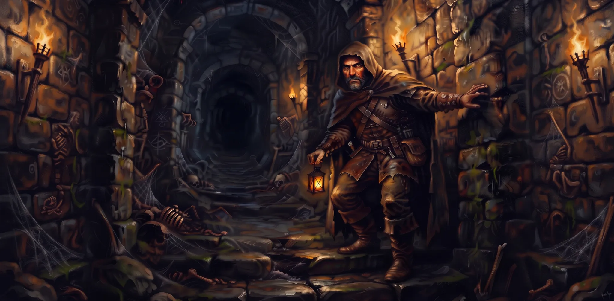
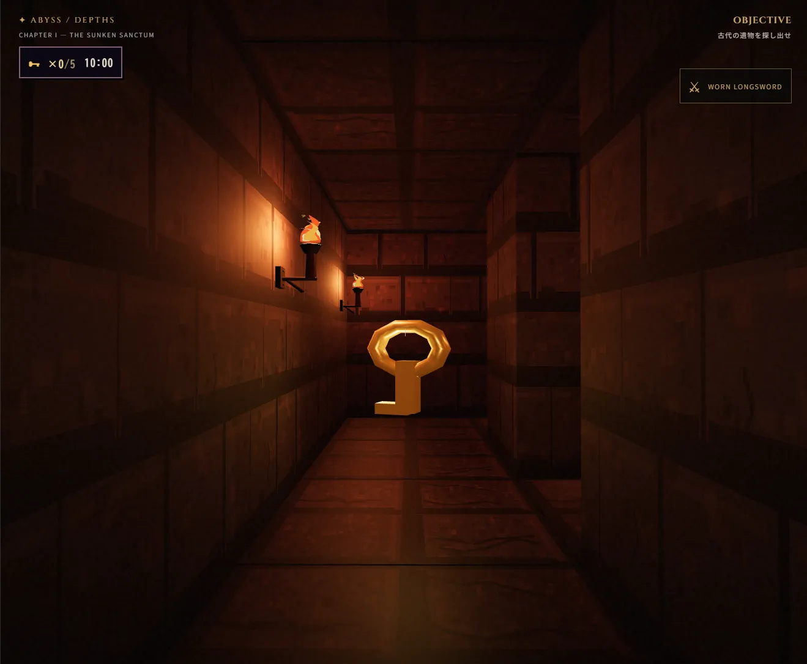
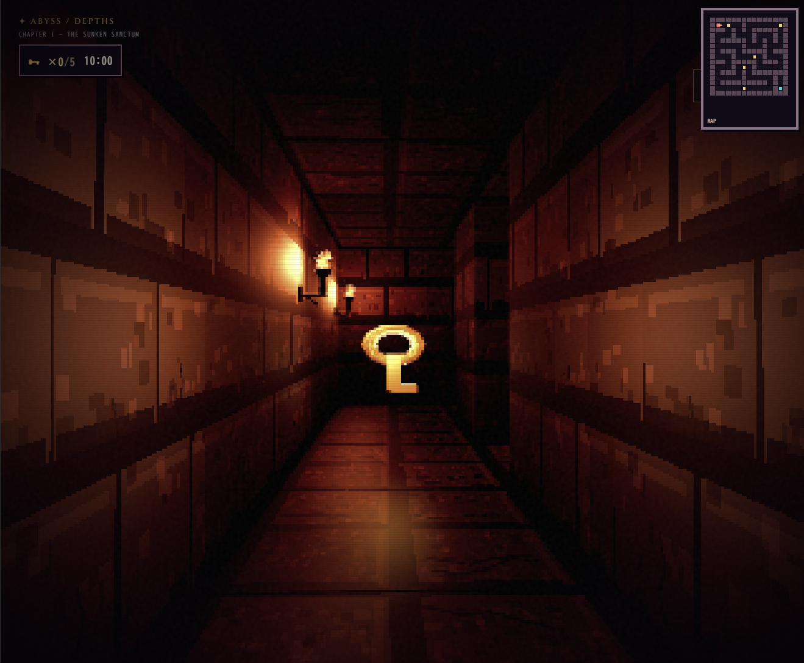
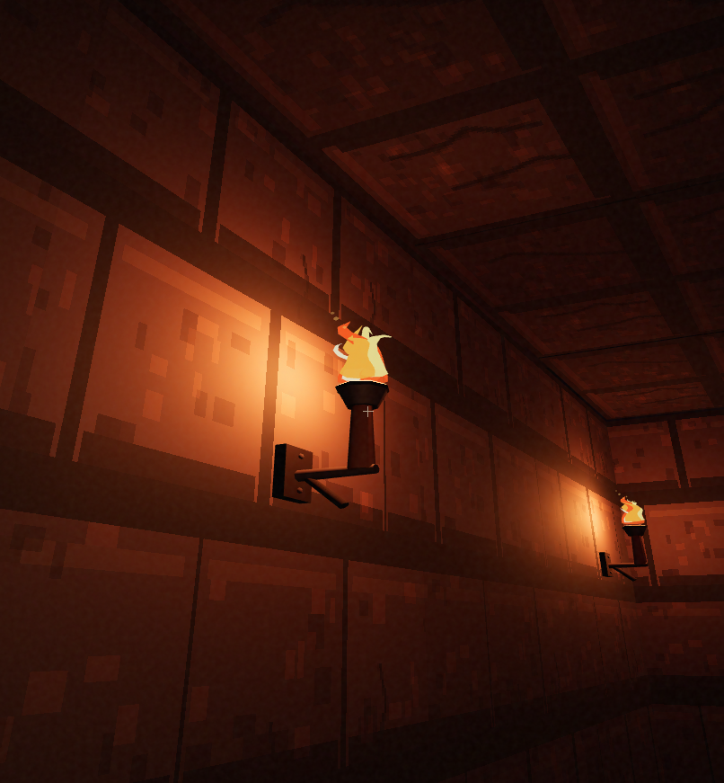

⌖
二つの探索モード
3D MODEは滑らかに移動する自由探索。RETRO MODEはマス目単位で移動・旋回する、クラシックなダンジョン探索です。

DUNGEON DRONE CRAWLER
光の届かぬ聖域へ
五つの鍵を探し、封印された道を切り拓け
石壁に囲まれた地下迷宮。揺れる松明を頼りに通路を進み、古代の遺物へと続く道を探し出す、一人称視点のダークファンタジー探索ゲーム。
入口近くの鍵を手にすると10分間のカウントダウンが始まる。迷宮に隠された5つの鍵を集め、閉ざされた壁の先へ進め。
3D MODEは滑らかに移動する自由探索。RETRO MODEはマス目単位で移動・旋回する、クラシックなダンジョン探索です。
迷宮のどこかに眠る鍵を探してください。入口近くの鍵を拾うと10分間の制限時間が始まります。
5つすべての鍵を集めると、迷宮のどこかで壁が開きます。変化した通路を探して、さらに奥へ進みましょう。
ABYSSのBGMには、静かに響き続ける音を中心としたドローンミュージックを採用しています。
強いメロディで導くのではなく、持続する音と緩やかな変化が、石壁の冷たさ、灯火の揺らぎ、深い闇に包まれる感覚を引き立てます。
足音に耳を澄ませながら、音の余韻とともに進む探索をお楽しみください。
メロディやリズムを極限までそぎ落とし、持続音そのものを主役に据えて、微細な音のゆらぎや倍音、音響の質感に意識を集中させる実験的な音楽表現。1960年代にラ・モンテ・ヤングらが確立し、その後アンビエントや現代音楽、ロック、メタルの文脈などにも広がりました。
深淵に響く、見えない風景。
石壁、灯火、静寂。
ふたつの視点から、深淵を探索する。



はじめての探索者の諸君へ。
ゲームの目的と操作を、ここで確認。
WASD・矢印キーで移動します。3D MODEではマウスで視点を操作。ゲーム中にCキーでCONFIGを開き、Escキーで閉じられます。RETRO MODEではA・D（←・→）で90度回転、W・S（↑・↓）で1マスずつ前進・後退します。
画面上の方向ボタンで移動・方向転換します。ゲーム中は右下のCONFIGボタンから設定を開けます。RETRO MODEでは1回のタップで1マス移動します。
CONFIGでは音量・描画品質・3D/RETRO MODE・表示言語（日本語／英語）を切り替えられます。
ABYSSの世界をともに創り上げる、制作スタッフとすべての探索者へ。
Liveにお越しの皆様♪
このゲームはHirotsugu Takuboのライブに足を運んでくれた方への特典として、ダンジョンへの鍵をお渡ししたものです。